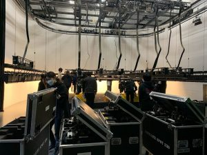

こんにちは！！
コンサート・イベント科です(^^)
みなさま新年あけましておめでとうございます！！
もう１月も１２日になってしまいましたが、本年もコンサート・イベント科を
どうぞよろしくお願いいたします(^^)
さて、新年１発目の記事はなんと！
昨年のクリスマスに行われてたミュージック科クリスマススーパーライブについてお届けします～～！！
２０２１年の最後のイベントはミュージック科主催の「クリスマススーパーライブ」でした！
ミュージック科の学生全員が出演する豪華な一日、
コンサート・イベント科だけではなく、エンタメ系全学科合同で行われたイベントでした♪

コンサート・イベント科としては初めて１～４年生合同でイベントを行いました！
いつもはなかなか全学年で顔を合わせられるタイミングは少ないので、
学生たちの仲も深まりとても良いイベントになりました～～！！
最後にはこのイベントに関わった全員で集合写真★
こんな風に他学科とのつながりが持てるのはテクノスならではだと思います！！
２０２２年もエンタメ系でたっくさん面白いことやっていきたいです！！
今年もよい年にしましょう～～～♪
コンサート・イベント科では各種SNSにて情報発信中★
ぜひチェックしてください！！
Twitterアカウント：https://twitter.com/essinfo1
Instagramアカウント： https://www.instagram.com/concert.event.ace/
それではまた次回の更新まで～～！！
▼この学科・コースの詳細▼
東京工学院専門学校 芸術・エンターテイメント系
>> ◆コンサート・イベント科
→ オープンキャンパスの申込みはこちら
→ 資料請求（無料）の申込みはこちら
→コンサート・イベント科：twitter
→コンサート・イベント科：Instagram